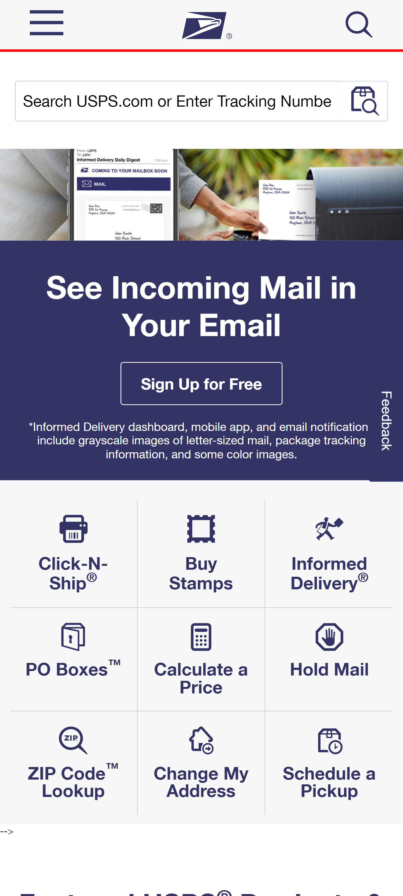

White Space & Clean Design
t-mobile
t-mobile.comas you can see this website has verry clean design. The viewer will be able to see the page clearly and find what they came to the site for.
contrast principle
USPS
usps.com This website is arranged by elements and effects. For example, light and dark colors, smooth and rough textures, large and small shapes as you can see it has more than three deferent shapes and textures.
Repetition
BYU-I
byu-i.comThis website demonstrates repetition by using the same font, colors, headings, and layouts. the viewer and emphasizes ideas and similar objects.